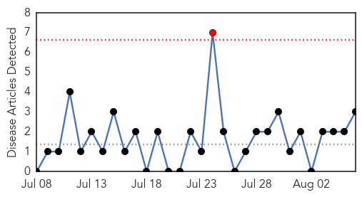
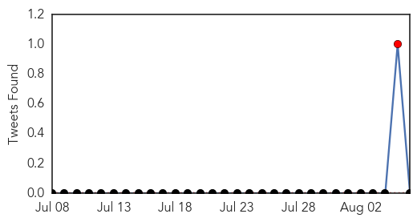
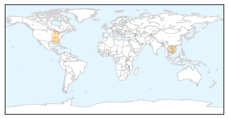
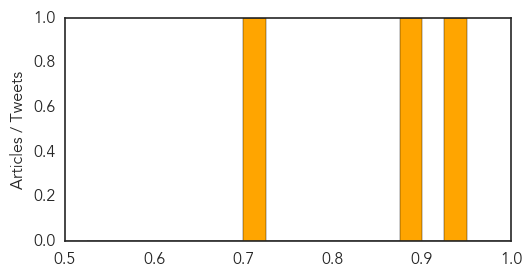
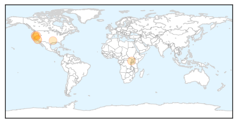
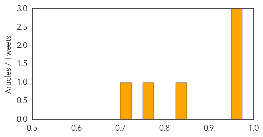

Meningitis
30-Day Web Trend
1 alerts, 0 warnings

30-Day Twitter Trend
1 alerts, 0 warnings

Article Locations
Article Confidences
Top Articles:
Top Tweets:
-
No tweets found for Aug 06, 2014
West Nile Virus
30-Day Web Trend
1 alerts, 0 warnings
30-Day Twitter Trend
0 alerts, 0 warnings

Article Locations
Article Confidences
Top Articles:
- 0.973
- Two deaths from West Nile virus reported in Northern California
- 0.964
- Shasta County adult second in state to die from West Nile this year
- 0.964
- Shasta County adult second in state to die from West Nile this year
- 0.828
- West Nile Detected in Washoe County
- 0.772
- River blindness tamed in more districts
- 0.722
- West Nile hits Caddo Parish: What you need to know
Top Tweets:
-
No tweets found for Aug 06, 2014